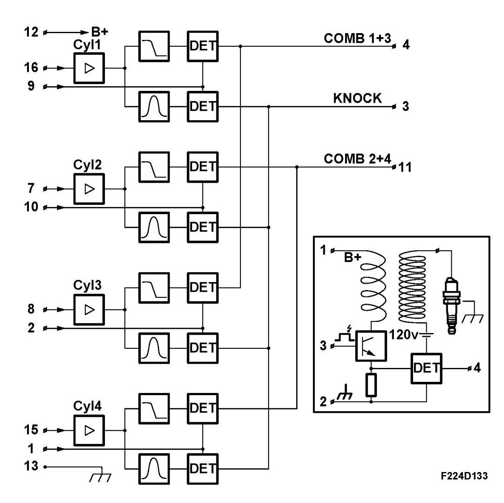
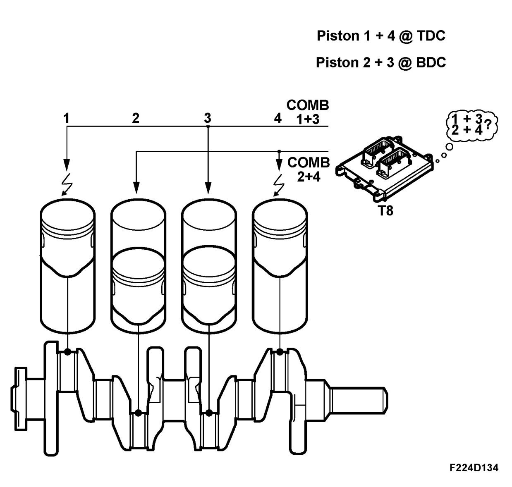
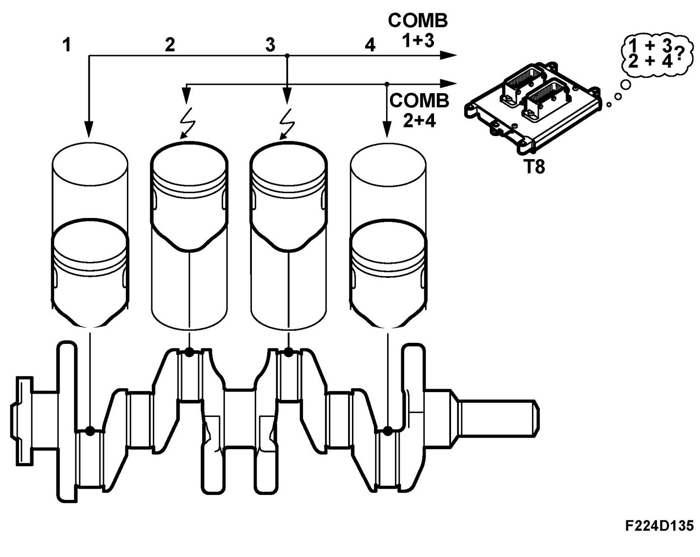
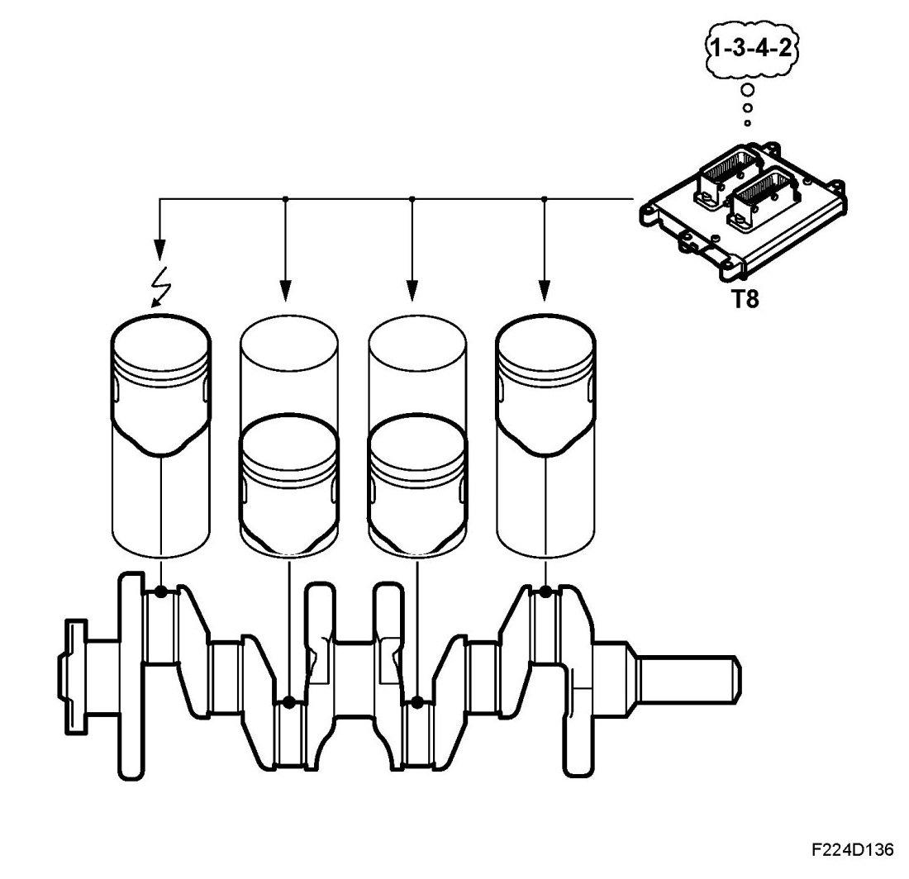
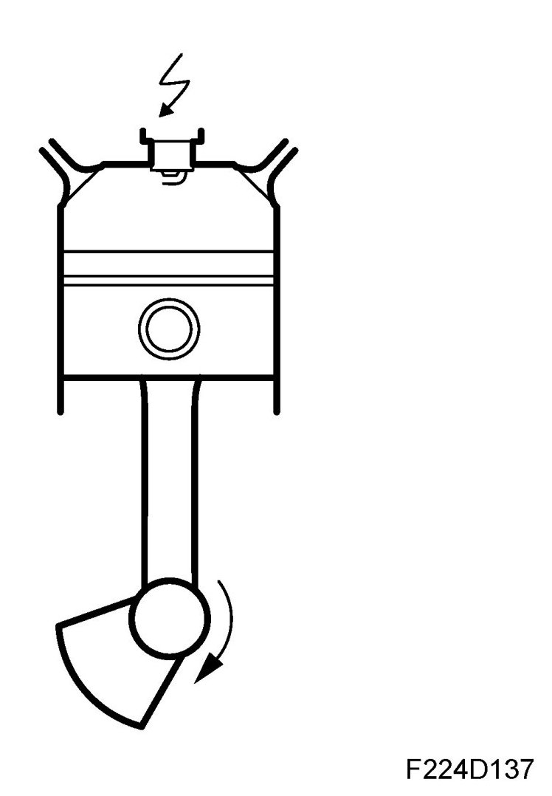
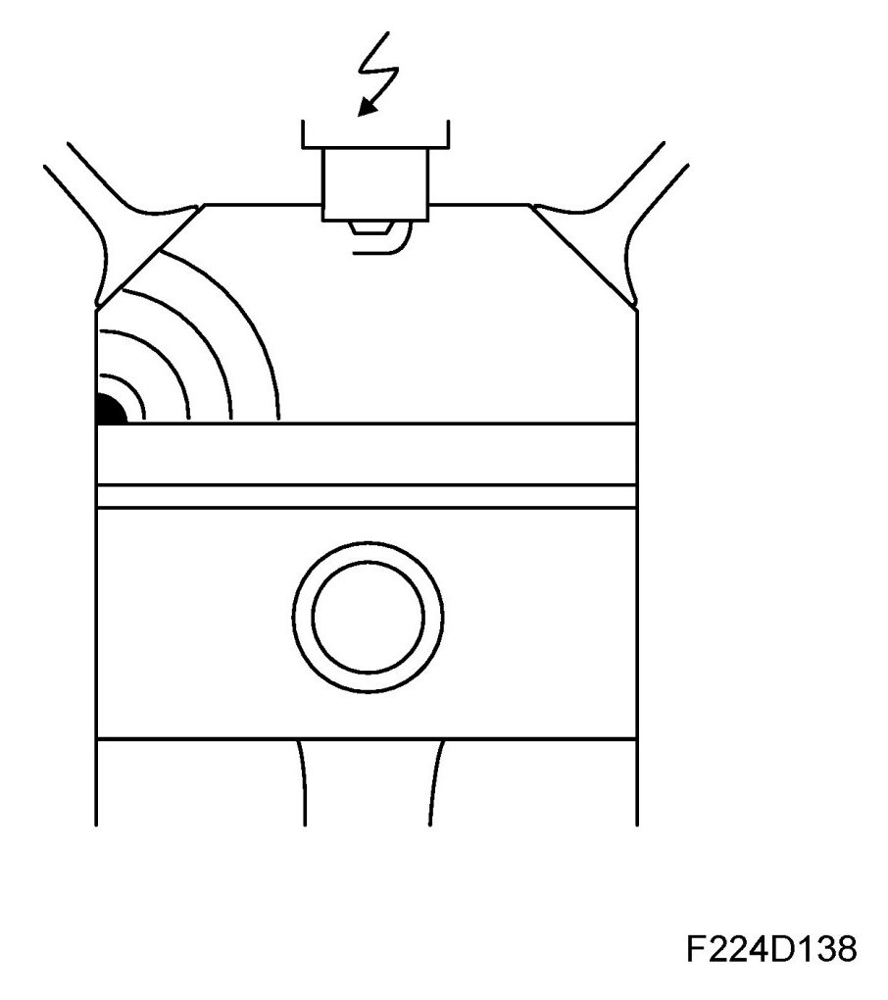

Ionization Current Measurement
Ionization Current Measurement

Trionic T8 does not have a conventional knock sensor and instead uses the spark plugs as sensors for ionization current measurement.
A voltage of 120V is continuously applied across the spark plugs. As the pressure and temperature are very high in conjunction with combustion, the gases in the combustion chamber will be electrically conductive so that electric current can flow across the spark plug gap without causing a spark.
The degree of ionization (current) is reflected in the conditions in the combustion chamber. By analysing the ionization current, ECM can determine whether combustion is normal or misfiring and whether there is knocking.
The ignition coils of the respective cylinders generate an ionization voltage, measure the ionization current and send the results to CDM for initial processing of the ionization signal from the respective ignition coil.
CDM generates a knock signal from the ionization information from the four cylinders and the signal is used by ECM to determine whether the engine is knocking. Once the spark has ignited, ECM will "listen" to the knock signal of each cylinder for a specific number of crankshaft degrees, a so-called window.
Combustion signals, synchronization
Trionic T8 does not have a camshaft position sensor, which is normally needed for sequential knock control and fuel injection.
When starting, ECM is not aware of whether it is cylinder 1 or 4 that is in compression stroke, i.e. the cylinder containing the air/fuel mixture.

Consequently, ignition will take place in both cylinders and in the same way, ignition will take place in cylinders 2 and 3 at the same time.
In order to synchronise the firing order, ECM must detect the result (combustion or not) after the simultaneous spark in cylinders 1/4 and 2/3 respectively.
This is achieved in the following way:
Suppose a spark has been generated in cylinder 1 and 4. CDM will detect this because it is connected to the ignition trigger line of the respective ignition coils. CDM analyses the ionization signal from ignition coil pin 4 for cylinder 1 pin 16 and cylinder 4 pin 15 on CDM.

The cylinder in which combustion has taken place will produce a powerful ionization signal.
If combustion takes place in cylinder 1 then CDM will send a pulse from pin 4 to ECM pin 20(B) and from CDM pin 11 to ECM pin 21(B) if in cylinder 4. With regard to cylinders 2 and 3, if combustion takes place in cylinder 2, a pulse will be sent from CDM pin 11 to ECM pin 21(B) and cylinder 3 a pulse from CDM pin 4 to pin 20(B) on ECM.
When combustion signals arrive on ECM pins 20(B) and 21(B), the firing order and fuel injection will be synchronised.

Combustion signals, misfiring detection
The combustion signals are also used to detect misfiring, i.e. no combustion or poor combustion.

Knock detection
CDM analyses the ionization signals from pin 4 on the respective ignition coils.

- Cylinder 1 ignition coil is connected to CDM pin 16.
- Cylinder 2 ignition coil is connected to CDM pin 7.
- Cylinder 3 ignition coil is connected to CDM pin 8.
- Cylinder 4 ignition coil is connected to CDM pin 15.
CDM synchronises the ionization current measurement with the firing order and generates a knock signal that is sent to ECM pin 37(B).